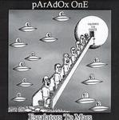

Home Artist links Label link

Paradox One - Escalators To Mars
| Artist: | Paradox One |
| Title: | Escalators To Mars |
| Label: | Neurosis Records '7'cd-03 |
| Length(s): | 45 minutes |
| Year(s) of release: | 2003 |
| Month of review: | [01/2004] |
Sample this album in MP3
The music
This is the third release by British keyboards experimentalist Phil Jackson. As could be expected, feared even, we are treated on a multitude of key experiments, and little things and sounds. The diversity absolutely saves this album from becoming boring, but you have to really focus to keep your attention: the material is not what one would call consistent, even within tracks. This is quite odd if you consider that Phil even sees two suites on this album. Don't get me wrong, the end result is stomachable enough as it is, but it's not like it's really about anything. Apart from that, I wouldn't call it an interesting elaboration on Phil's previous work. As far as that goes, he fits in with his label boss Rick Ray: releases are pretty exchangeable and pretty okay by themselves.
I will put this one on the stack, where it will soon find to be below a lot of other discs.
Roberto Lambooy
© Roberto Lambooy